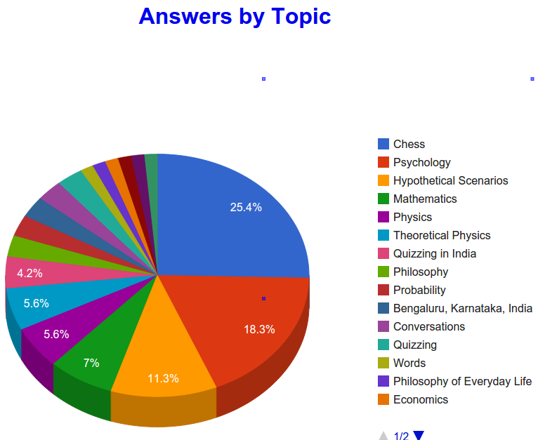

Aalhad Parulekar, from
Bangalore, is an electrical engineering student at BITS-Pilani. A
multi-faceted personality, he builds robots, writes well-regarded* essays and answers in topics ranging from Chess and Psychology
to Theoretical Physics and Bengaluru, Karnataka, India .

Selected answers:
* Essay on THE CALAMITY THAT INDIAN EDUCATION IS FACING AND
INNOVATION AS A MEANS TO OVERCOME IT (Innovative teaching and learning processes)